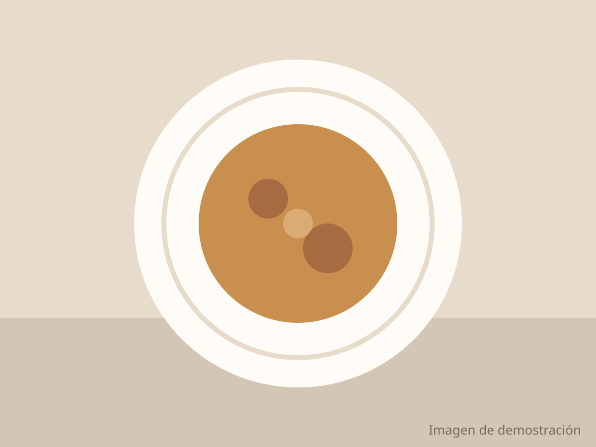

Tarta de queso cremosa
Tarta de queso al horno con la superficie tostada y el centro cremoso.

Ingredientes
- 800 g queso crema
- 250 g azúcar
- 5 huevos
- 400 ml nata para montar
- 2 cucharadas harina de trigo
- Sal, una pizca
Preparación
Precalienta el horno a 210 °C con calor arriba y abajo. Forra un molde de 22 cm con papel de horno, dejando que sobresalga por los bordes.
Bate el queso crema con el azúcar hasta que no queden grumos. Añade los huevos de uno en uno, mezclando solo lo justo.
Incorpora la nata, la harina tamizada y la sal. La mezcla quedará bastante líquida; es lo normal.
Vierte en el molde y hornea de 40 a 45 minutos, hasta que esté muy dorada por fuera y tiemble ligeramente en el centro.
Deja templar dentro del molde y después enfría en la nevera, como mínimo 4 horas, antes de servir.
Consejos
- Saca los ingredientes de la nevera una hora antes para que se integren mejor.
- Se corta más limpia al día siguiente.